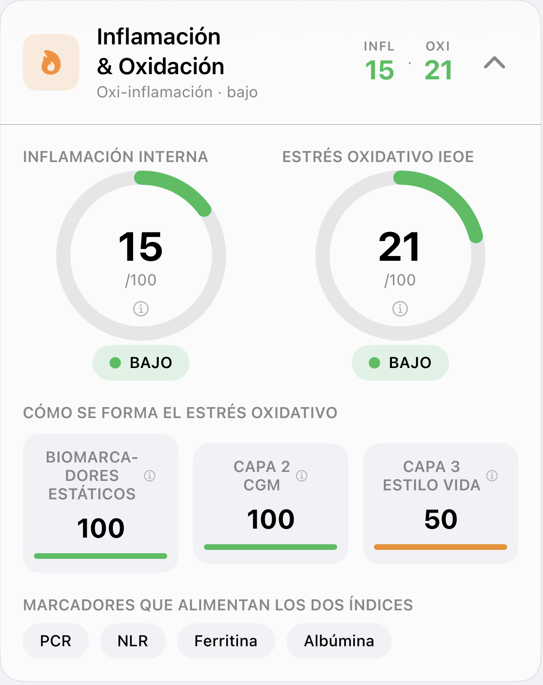

Indicadores Glucovibes
La inflamación que no duele
No se ve ni se nota… pero con los años pasa factura.
Desliza →
Hacemos visible lo invisible
No se ve ni se nota… pero con los años pasa factura.
Desliza →

Captura de la app Glucovibes (datos de Alberto, fundador y usuario).
Combina lo estático (analítica) con lo dinámico (tu día a día) para actuar antes de que hable tu cuerpo.
Desliza →
glucovibes.com